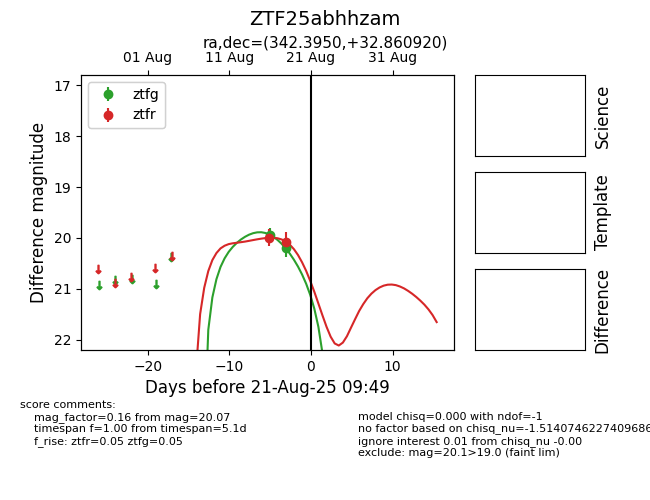

Target ZTF25abhhzam at 2025-08-21 09:49, see:
FINK: fink-portal.org/ZTF25abhhzam
Lasair: lasair-ztf.lsst.ac.uk/objects/ZTF25abhhzam
ALeRCE: alerce.online/object/ZTF25abhhzam
alt names
ZTF25abhhzam (ztf,alerce)
coordinates:
equatorial (ra, dec) = (342.3950,+32.86092)
galactic (l, b) = (95.2863,-23.38797)
photometry
last ztfg=20.21, ztfr=20.07
2 ztfg, 2 ztfr detections
